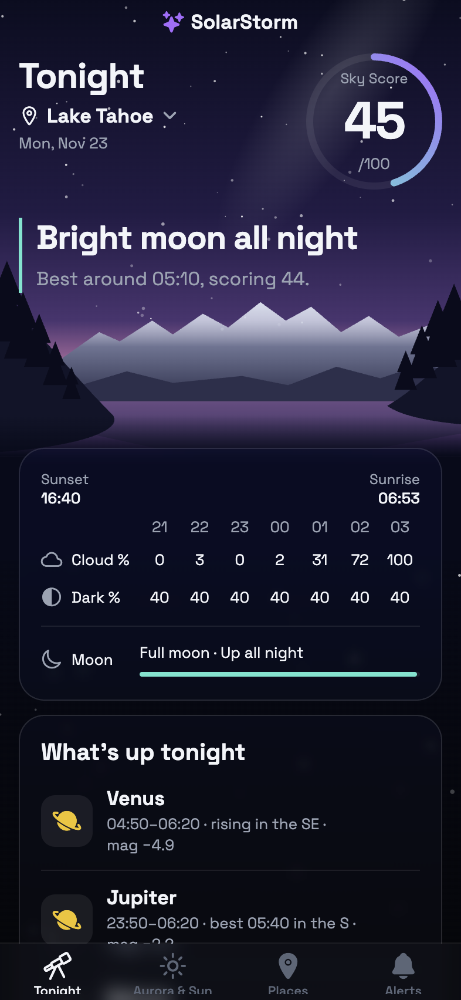
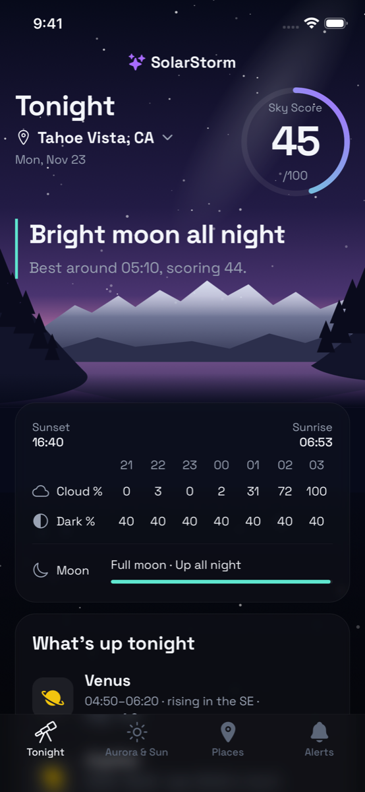
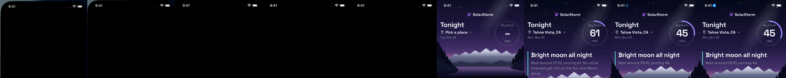
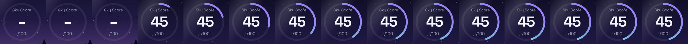

PR JS built with Hermes into the 1.0.1 simulator app (no native changes in this PR). Fonts, SVG ring, scene and blur tab bar render as on web.
The ring fills from empty to the score in about 0.8 s after the forecast lands.
Found and fixed: on launch a plan was drawn before the forecast arrived (no clouds, device time zone), so the score flashed 61 and times read in Central time before settling on 45. Tonight now waits for the first fetch.
Left as is: while loading, the place reads "Pick a place" for one frame and the date shows the device's day (Tue) until the forecast gives the place's time zone (Mon).



Spec: ../tonight-spec.md